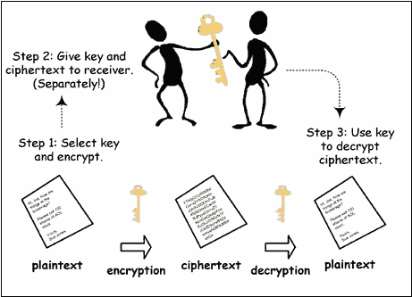

Lift System
we define a Lift class that has private member variables currentFloor to
keep track of the current floor and isMoving to indicate if the lift is in motion.
The Lift class also has a public member function moveToFloor that takes an integer
parameter floor. This function checks if the specified floor is valid and if the lift is
already in motion or already on the desired floor. If everything is valid...
Read more →

Huffman-Coding
In computer science and information theory, a Huffman code is a
particular type of optimal prefix code that is commonly used for lossless data
compression. The process of finding or using such a code is Huffman coding, an algorithm
developed by David A. Huffman while he was a Sc.D. student at MIT, and published in the
1952 paper "A Method for the Construction of Minimum-Redundancy Codes"...
Read more →

Encrypt and Decrypt Text File
In cryptography, encryption is the process of encoding information.
This process converts the original representation of the information, known as
plaintext,
into an alternative form known as ciphertext. Ideally, only authorized parties can
decipher or decrypt a ciphertext back to plaintext and access the original
information...
Read more →